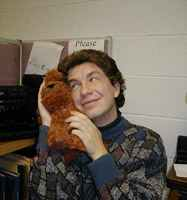
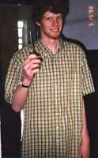
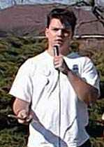
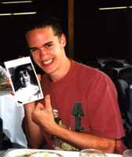

Home:
The official first page.
Events:
Day by day campaign calendar.
Fun With Brad:
Dress up doll!!!
Comics:
Derby Hat Man, Phil n' Bill. |
Coordinators |
Sean Salter
Junior
Art/Education/MathematicsSean Salter hails from Louisiana where, as everyone knows, people eat nothing
but crayfish gumbo and wear giant novelty Mardi Gras heads year round. He is
triple-majoring in art, mathematics, and education, yet is still upset that he cannot work
out a schedule that will allow him to graduate in four years. Sean has an immaculate
fashion sense, wearing Air-Force flight suits, flip flops, and garish sweaters purchased
at Goodwill on most days. His musical tastes include jazz, classical, and independent
punk-rock. Looking through his record collection is like reading a book entitled “101
Bands You’ve Never Heard Of”. Sean’s hobbies include soccer, skateboarding,
and making fun of Paco. |
 Matthew Schipper Matthew Schipper
Junior
Commercial Design/PaintingMatthew
Schipper’s importance to the Brad Campaign cannot be understated. Without his undying
dedication to his job at Pizza Hut, the staff would have no leavin’s to feast on
during those long nights of brainstorming. He may also contribute to the idea process
some, but we really can’t remember for sure. Matthew is not only the founder, but
also the world’s only practitioner of the Half-Assed Fancy art movement. Most of the
time his unconscious form can be seen lying on the couch, but during those few waking
hours, Matthew enjoys a wide variety of diversions from napping to thinking about
sleeping. He is also a varsity track runner (in theory) but can’t seem to pass PFM. |
Consultants |
Chad Stangl
Sophomore
Commercial DesignChad Stangl is not Jewish, but
he would look damn fine in a yarmulke so it’s really the religion’s loss. Chad
has a tendency to bitch about anything and everything, so don’t talk to him unless
you really have a hankering to hear some pathetic sniveling. He is however a fine
basketball player, and holds the Stewart Manor C-league point record for a single game. He
is also the singer and writer of the popular (around here anyway) song “Donkey
Punch”. He looks like a miniature Dwayne Hughes. |
Filip Stojanovski
Senior
Computer Science/Information TechnologyFilip is originally from…
someplace other than America, which is sometimes visibly apparent in his choice of attire.
This week, he is fond of jolly Bosnian and sad Croatian songs, which he is glad to
share as mp3 files. His favorite song is "God Forgave Me, And So Could You," and
it readilly comes to mind whenever programming homeworks' deadlines come. Filip is
responsible for getting this here website up and running. |
Advisors |
Ian Brenneman
Junior
Japanese or something…A valued and
respected member of the Vote Brad campaign, Ian has since moved on to the University of
Iowa because we weren’t good enough for him. His
influence on the original Masterplan (which has nothing to do with the rock band Oasis or
the scheme to knock down Cheville Chapel) was so great that it would be a travesty to omit
him. He created the now infamous ‘Some
Of Brad’s Best Friends Are Ninjas’ poster, causing creative jealousies that
nearly tore the staff apart. Although far away, he is still contributing to the campaign
via e-mail. |
Cam Casey
Sophomore
Mathematics
Cam Casey joins our staff midway through the campaign. He is a Brad fanatic and hangs around the booth
all day long. We figured he might as well have a title if he is going to leech off
our creative energies. Cam is the layout editor for the Tower and enjoys inserting
his own subversive messages for space filler. Unlike Brad, he is dating a girl and
he didn’t even have to hold a drawing to meet her. The staff has affectionately
dubbed him ‘Crotch Cam’ for no reason other than it sounds funny. Welcome
aboard buddy!
|
Aaron
Thatcher
Aaron may or may not endorse Brad. He is waiting for the outcome of the election to form
power alligences in order to boost his already sickening resume. If Brad were to win Aaron
stands a decent shot at being appointed Vice President. If Brad loses, Aaron will be
proclaiming the gospel of Mike, fingers-crossed for forgiveness. |
Jared Dunsdon
Junior
SculptureWell, we would tell you something
about Jared, but we haven’t seen him. SO,
if you see him around (pool, lounge, etc.) tell him we said ‘hi.’
Jared has been fired due to lack of
participation and failure to wear spiffy campaign jacket.
|
|